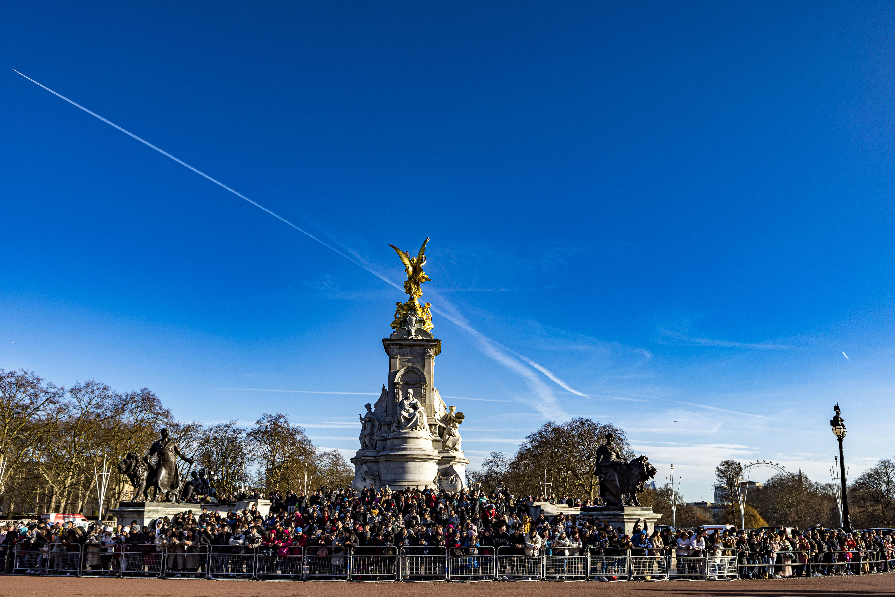
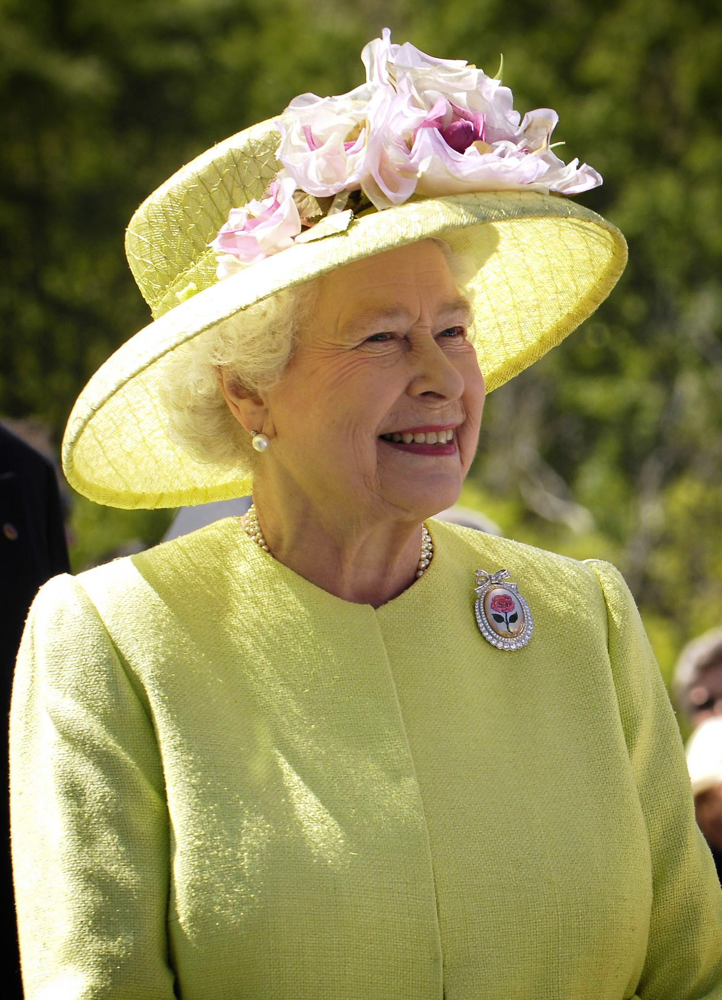

About
History

Victoria Memorial (Photo by hulkiokantabak on Pixabay)
The Buckingham Palace, originally known as the Buckingham House was built in 1705 for the duke of Buckingham (John Sheffield) but, was later bought by George III for his wife (true love if you ask me) in 1762. It was then known as 'The Queen's House'. By the 1820s, George IV started to transform the Buckingham House into a Palace, as their family getaway.
The palace was enlarged by John Nash which he extended the central block, whilst rebuilding the two wings to the east, enclosing it which created an arch in the centre. However in 1828, it was estimated that renovation costs were over £400k prompting the dismissal of Nash by the Prime Minister when George IV died.
It wasn't until 1837 where Buckingham Palace became the official London residence of the British monarch when Queen Victoria succeeded to the throne. Over the centuries, the Palace has been through numerous renovations and demolitions but by the 1910's, it was completed to how we know it today.
Architecture and Design
The palace currently has 775 rooms which includes, 19 State Rooms, 52 royal and guest bedrooms, and 188 staff bedrooms. It can be described as a neoclassical design derived from anxient Greek and Roman traditions. Its current design was designed by Edward Blore with symmetrical features and order, which can be comparable to the White House in Washington D.C.
The palace was originally built with Bath stone but the East front was updated in 1913 with Portland Stone. The U-shaped design forms a central court, which offers an arch entrance, enhancing its regality. Additionally, the exterior shows detailed pillars and stonework which is striking to the eye.
One of the many highlights is the beautiful surrounding gardens, which showcases an artificial lake, prestigious landscaping, overall captivating the royal essence.
Why Buckingham Palace matters

Queen Elizabeth II (Photo by WikiImages on Pixabay)
Buckingham Palace is one of the most known buildings in the world and an important symbol of the British monarchy. It plays a role as the headquarters of the Crown, hosts state ceremonies and ambassadors, and represents the UK. As the palace is a historical site, it is important to preserve it as it represents the UK's cultural heritage and tourism.